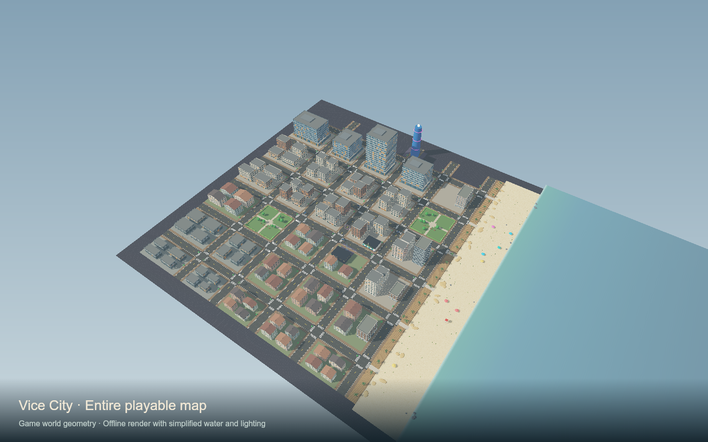
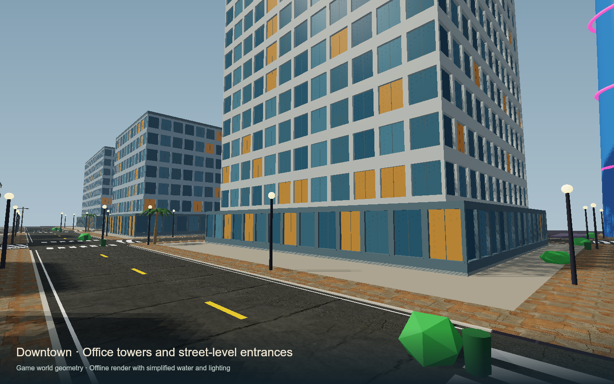
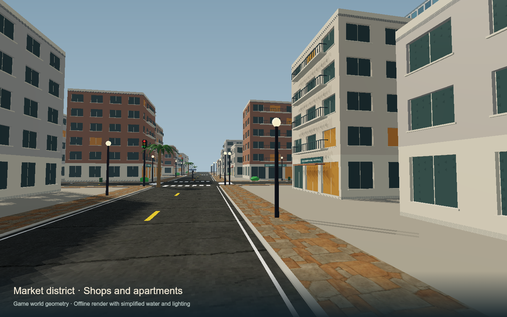
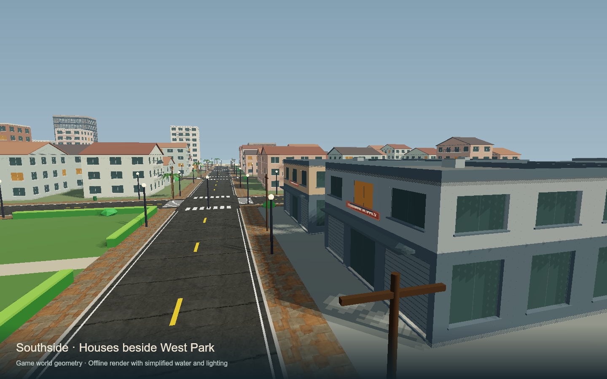
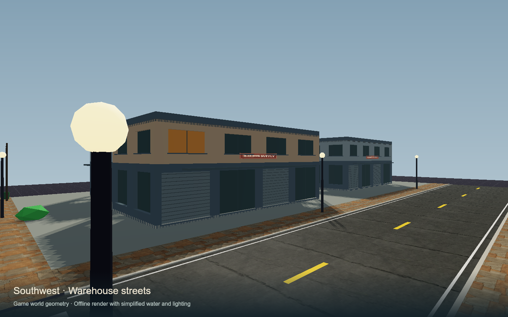
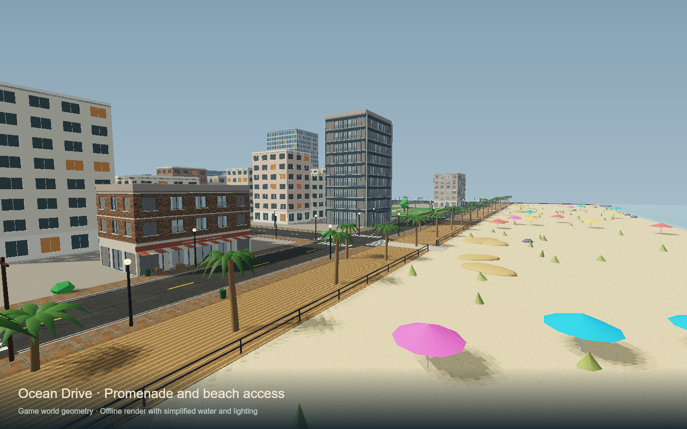

Vice City Stories
Explore the full city, from downtown office towers and the market streets to Southside homes, warehouse blocks, and the Ocean Drive promenade.

The whole map
30 blocks, 94 buildings, two public parks, and six paths from the promenade to the sand.

Downtown
Recessed glass bays, masonry podiums, and rooftop equipment.

Market district
Recessed storefronts, shaded signs and balconies above the sidewalk.

Southside
Pitched roofs and front balconies near West Park.

Warehouse streets
Roll-up loading doors, steel canopies, and low industrial roofs.

Ocean Drive
Detailed coastal buildings beside a continuous boardwalk and beach access at each street.